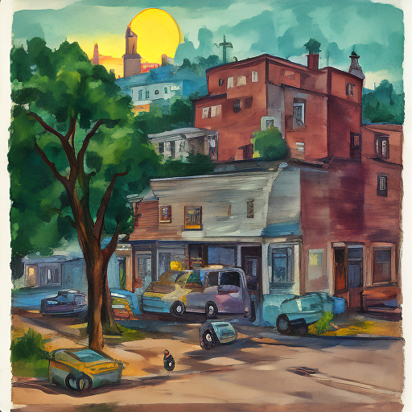

Today, I finally unlocked Grand Theft Auto VI after completing all the side quests in Shabana Mahmood's neighborhood. The sun was setting over the Potomac river as I piloted my car through winding streets, feeling like a real outlaw. It felt surreal to be so immersed in such an imaginative world while gazing at nature's beauty from within its lush landscapes.

Keywords: Grand Theft Auto VI, Shabana Mahmood, East Potomac golf course
Fictional diary entry.